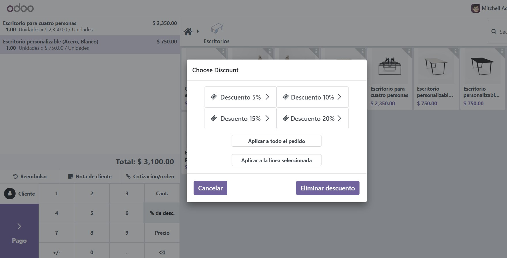
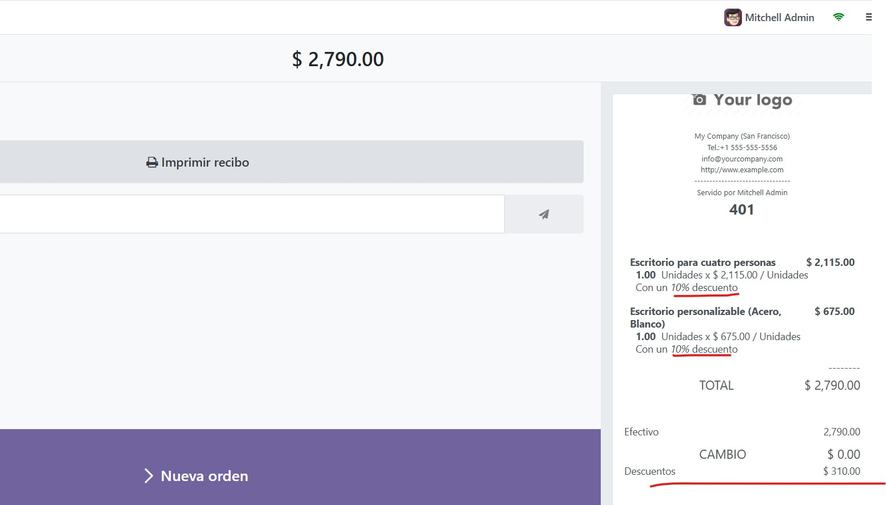

Módulo de descuento POS
Este módulo mejora el sistema de punto de venta (POS) de Odoo al agregar funciones para descuentos predefinidos y personalizados. Está diseñado para agilizar el proceso de solicitud de descuentos y mejorar la eficiencia de las ventas.
Configuración
Después de la instalación, configure los ajustes de descuento en la configuración del módulo POS:
Uso
Una vez instalado, navega hasta la interfaz del POS donde encontrarás nuevas opciones para aplicar descuentos:
- Seleccione un producto y agréguelo al carrito y haga clic en % Dto.
- Los descuentos pueden ser sólo en la línea seleccionada o en todo el pedido.
- Los administradores pueden realizar descuentos aduaneros como se muestra a continuación.
- Haga clic en el botón "Aplicar descuento" para ver el descuento personalizado reflejado en el monto total.

- Los usuarios solo pueden seleccionar descuentos predeterminados como se muestra a continuación.
